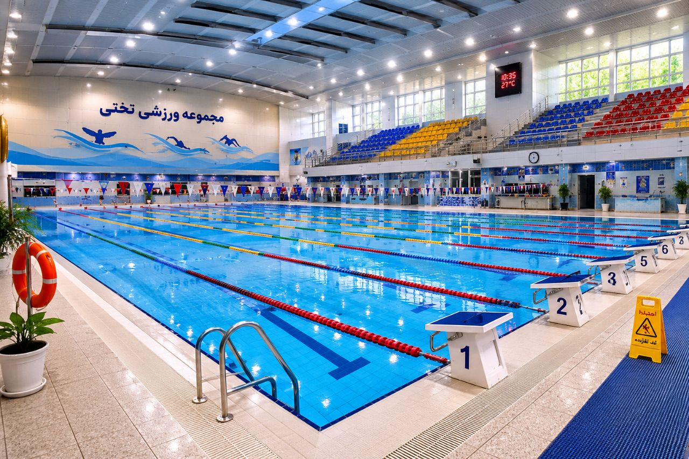
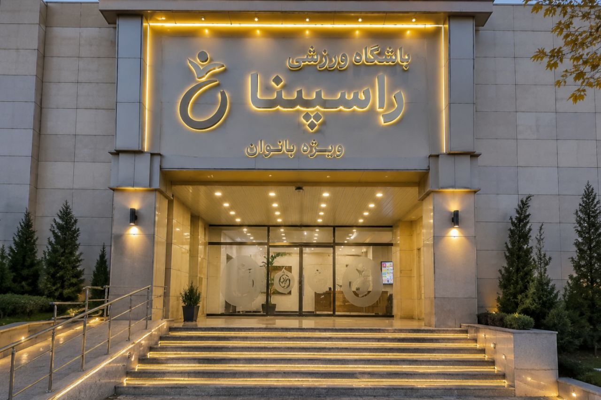
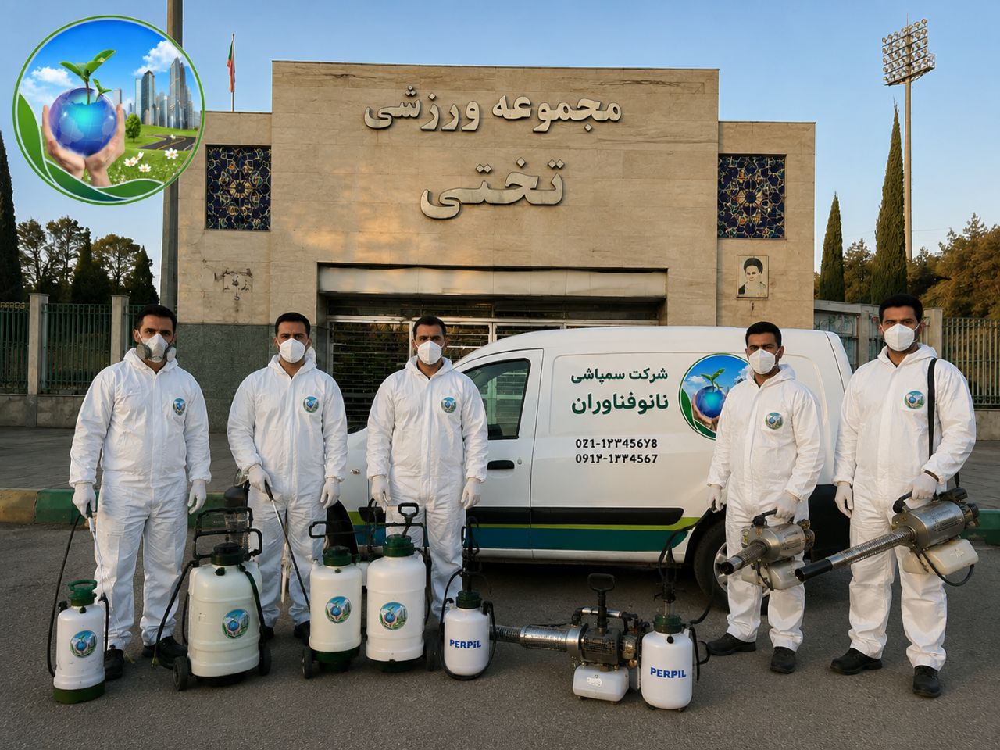

باشگاههای ورزشی، استخرها و مجموعههای ورزشی به عنوان یکی از پررفتوآمدترین اماکن عمومی، همواره در معرض آلودگیهای مختلف محیطی و بهداشتی قرار دارند. تردد روزانه دهها یا حتی صدها نفر در چنین مکانهایی به معنای ورود مداوم انواع آلودگیها، میکروبها و حشرات موذی است. همین موضوع اهمیت نظافت، ضدعفونی و سمپاشی این اماکن را دوچندان میکند.
مجموعههای ورزشی به دلیل ویژگیهای خاص خود مانند رطوبت بالا، دمای گرم، وجود سرویسهای بهداشتی، دوشها، استخرها و گاهی آشپزخانهها، بستر مناسبی برای رشد و تکثیر حشرات موذی فراهم میکنند. از طرفی ورزشکاران و مراجعهکنندگان، اغلب با کیف، کفش و وسایل شخصی خود از محیطهای مختلف وارد مجموعه میشوند و همین موضوع احتمال انتقال آفات را افزایش میدهد.
وجود حشراتی مانند سوسک، ساس، مورچه، کنه و حتی موریانه نه تنها باعث بروز مشکلات بهداشتی میشود، بلکه تصویر مجموعه را در ذهن اعضا خراب میکند. هیچ فردی تمایلی به تمرین در محیطی آلوده یا همراه با سوسک در رختکن ندارد.
در این مقاله جامع از شرکت سمپاشی نانوفناوران بهداشت تهران، به بررسی کامل چالشهای کنترل آفات در مجموعههای ورزشی، مهمترین آفات، روشهای تخصصی سمپاشی و نکات کلیدی برای حفظ بهداشت این اماکن میپردازیم.

محیطهای ورزشی به دلیل تعریق بالا، تماس نزدیک ورزشکاران با یکدیگر و استفاده مشترک از تجهیزات، یکی از مستعدترین مکانها برای انتقال بیماریها هستند. آفات مانند سوسکها و ساسها میتوانند ناقل باکتریها و ویروسهای خطرناک باشند که از طریق تماس مستقیم یا آلودگی وسایل قابل انتقال هستند.
محیط پاکیزه و عاری از آلودگی تاثیر مستقیمی در اعتمادسازی بین اعضا دارد. یک مجموعه ورزشی که به بهداشت و نظافت اهمیت میدهد، نه تنها اعضای فعلی خود را حفظ میکند، بلکه اعضای جدید را نیز جذب مینماید. در مقابل، مشاهده هرگونه آفت در باشگاه یا استخر، میتواند به سرعت در شبکههای اجتماعی منتشر شود و اعتبار سالها تلاش را نابود کند.
برخی آفات مانند موریانه یا سوسکهای چوبخوار به ساختار داخلی وسایل و حتی سیستم تهویه آسیب وارد میکنند. این خسارتها میتواند هزینههای سنگینی را به مجموعه تحمیل کند.
مجموعههای ورزشی موظف به رعایت استانداردهای سختگیرانه بهداشتی هستند. بازرسان بهداشت محیط به طور دورهای از این اماکن بازدید میکنند و در صورت مشاهده هرگونه آلودگی، ممکن است مجموعه را جریمه یا حتی تعطیل کنند.
سوسکها یکی از رایجترین و خطرناکترین آفات در محیطهای ورزشی هستند. آنها ناقل باکتریهای بیماریزا مانند سالمونلا و ایکولی هستند و میتوانند مواد غذایی و سطوح را آلوده کنند. رختکنها، سرویسهای بهداشتی، آشپزخانهها و آبدارخانهها از نقاط اصلی تجمع سوسکها در مجموعههای ورزشی محسوب میشوند.
سوسک آلمانی (سوسک ریز کابینتی): کوچکترین و مقاومترین سوسک که در محیطهای گرم و مرطوب زندگی میکند.
سوسک آمریکایی (سوسک فاضلاب): بزرگترین سوسک که از طریق لولههای فاضلاب وارد ساختمان میشود و معمولاً در زیرزمینها و تاسیسات یافت میشود.
ساسها در رختکنها، اتاقهای استراحت و فضاهای نشیمن مجموعههای ورزشی میتوانند به سرعت گسترش یابند و باعث خارش شدید، واکنشهای آلرژیک و بیخوابی در ورزشکاران شوند. این حشرات به راحتی از طریق لباسها، کیفها و وسایل شخصی وارد مجموعه میشوند.
یکی از ناخوشایندترین مشکلات در استخرها، حضور کرمهای ریز یا همان لارو پشهها در آب است. این موجودات ریز در آب راکد رشد میکنند و اغلب به صورت کرم کوچک سیاه رنگ یا قرمز دیده میشوند. دلیل اصلی این مشکل، عدم تعادل مواد شیمیایی مانند کلر و pH آب استخر، راکد بودن آب و عدم گردش کافی است.
لارو پشهها در آب خطرناک بوده و میتوانند باعث بیماریهای پوستی، عفونت و آلودگی آب استخر گردند. بنابراین کنترل و پیشگیری از رشد آنها در استخرها از اهمیت ویژهای برخوردار است.
موشها در مجموعههای ورزشی، علاوه بر انتشار بیماریها، میتوانند تجهیزات الکترونیکی، کابلهای برق و سیمکشی را تخریب کنند. جوندگان در زیرزمینها، انبارها، آشپزخانهها و فضاهای پشتی لانهسازی میکنند.
مورچهها به دلیل جستجوی غذا و رطوبت، به راحتی وارد آشپزخانهها، بوفهها و انبارهای مواد غذایی میشوند و میتوانند مواد غذایی را آلوده کنند.
کنهها در فضاهای سبز اطراف مجموعههای ورزشی و در تماس با حیوانات، میتوانند به ورزشکاران منتقل شوند و باعث بیماریهای خطرناکی مانند تب کریمه کنگو شوند.
مجموعههای ورزشی دارای فضاهای متنوعی مانند سالنهای تمرین، رختکن، سرویسهای بهداشتی، دوشها، استخر، سونا، جکوزی، آشپزخانه، انبارها، فضاهای اداری و پارکینگ هستند که هر کدام نیاز به روشهای کنترل خاص خود دارند.
وجود استخر، سونا، جکوزی و دوشها باعث ایجاد رطوبت بالا در مجموعههای ورزشی میشود. این رطوبت، محیطی ایدهآل برای رشد و تکثیر سوسکها، قارچها و سایر آفات فراهم میکند.
ورود و خروج مداوم ورزشکاران، مربیان و کارکنان، احتمال انتقال آفات از محیطهای خارجی را افزایش میدهد و کنترل آفات را دشوارتر میسازد.
بسیاری از مجموعههای ورزشی به صورت شبانهروزی فعال هستند و نمیتوانند برای سمپاشی تعطیل شوند. بنابراین سمپاشی باید در ساعات کمترافیک و با کمترین مزاحمت برای اعضا انجام شود.
در مجموعههای ورزشی، سموم باید کاملاً بیبو باشند تا بر تنفس ورزشکاران تأثیر نگذارند و همچنین باید فاقد هرگونه مواد مضر برای پوست و دستگاه تنفسی باشند.
کارشناسان ما با بررسی کامل مجموعه ورزشی، نقاط حساس، نوع آفات، میزان آلودگی و مسیرهای ورود را شناسایی میکنند. این بازرسی شامل موارد زیر است:
بر اساس نتایج بازرسی، یک برنامه جامع برای سمپاشی مجموعه تدوین میشود که شامل:
در مجموعههای ورزشی، انتخاب سموم و روشهای سمپاشی با نهایت دقت انجام میشود:

عملیات سمپاشی با استفاده از تجهیزات پیشرفته و سموم استاندارد انجام میشود:
پس از سمپاشی، محیط به مدت مناسب (حداقل ۴ تا ۶ ساعت) تهویه میشود. کارشناسان زمان بازگشت ایمن اعضا و کارکنان را اعلام میکنند.
پس از اتمام عملیات، کارشناسان ما بازدید مجدد انجام میدهند تا از موفقیت سمپاشی اطمینان حاصل کنند و در صورت نیاز، اقدامات تکمیلی انجام دهند.
کارکنان و اعضا باید علائم حضور آفات را بشناسند، روشهای گزارشدهی سریع را بدانند و نکات بهداشتی را رعایت کنند.
هزینه سمپاشی مجموعه ورزشی به عوامل زیر بستگی دارد. برای دریافت مشاوره رایگان و استعلام دقیق هزینه، با کارشناسان ما تماس بگیرید:
| عامل | تأثیر بر هزینه |
|---|---|
| مساحت مجموعه | هرچه متراژ بزرگتر باشد، هزینه بیشتر است |
| تعداد فضاها و بخشها | بخشهای بیشتر نیاز به عملیات گستردهتری دارند |
| شدت آلودگی | آلودگی شدید نیاز به عملیات بیشتر و زمانبرتری دارد |
| نوع آفات | ساس و سوسک آلمانی نیاز به روشهای خاص و هزینه بیشتری دارند |
| نوع روش سمپاشی | طعمهگذاری، مهپاشی یا ترکیبی |
| نوع سموم | سموم تخصصی و بیخطر برای ورزشکاران هزینه بیشتری دارند |
توصیه میشود مجموعههای ورزشی حداقل سالی دو تا چهار بار (هر فصل یا هر شش ماه) سمپاشی شوند. مجموعههای دارای استخر و رطوبت بالا ممکن است نیاز به سمپاشی ماهانه داشته باشند.
خیر، سموم استفادهشده توسط شرکت نانوفناوران با رعایت کامل استانداردهای بهداشتی انتخاب میشوند و برای انسان بیخطر هستند. در هنگام سمپاشی، محیط تهویه میشود و پس از آن برای حضور افراد ایمن میگردد.
بسته به نوع سموم استفادهشده، معمولاً ۴ تا ۶ ساعت پس از سمپاشی، محیط برای حضور افراد ایمن است. کارشناسان ما زمان دقیق را به شما اعلام میکنند.
خیر، سمپاشی استخر و تنظیم مواد شیمیایی باید در زمانهایی انجام شود که استخر خالی از شناگر باشد. معمولاً این عملیات پس از ساعات کاری یا در روزهای تعطیل انجام میشود.
بهترین روش، ترکیبی از حفظ سطح استاندارد کلر، تنظیم pH، عملکرد صحیح پمپ تصفیه و تمیز کردن منظم استخر است. در صورت لزوم، از حشرهکشهای مخصوص استخر نیز میتوان استفاده کرد.
مجموعههای ورزشی، استخرها و باشگاهها به عنوان اماکن پرتردد و حساس، نیازمند بالاترین سطح بهداشت و ایمنی هستند. کنترل آفات در این محیطها، با پیشگیری از بیماریها، افزایش رضایت اعضا و حفظ سرمایههای ملی، به بهبود کیفیت خدمات ورزشی کمک میکند. رطوبت بالا، تردد زیاد و تنوع فضاها، مجموعههای ورزشی را به محیطی مستعد برای رشد آفات تبدیل کرده است که نیازمند رویکردی تخصصی و جامع در کنترل آفات میباشد.
شرکت سمپاشی نانوفناوران بهداشت تهران با بیش از یک دهه تجربه در زمینه سمپاشی مجموعههای ورزشی، استخرها و باشگاهها، آماده ارائه خدمات تخصصی و تضمینی به شماست. تیم کارشناسان ما با شناسایی دقیق نوع آفات، استفاده از سموم استاندارد و ایمن، و رعایت کامل نکات ایمنی، محیطی امن، بهداشتی و عاری از آفات را برای مجموعه ورزشی شما به ارمغان میآورند.
🚀 همین حالا اقدام کنید:
📞 تماس فوری: ۰۹۱۲۰۷۰۵۷۴۶
💬 درخواست مشاوره رایگان: از طریق واتساپ یا ایتا
🔗 مشاهده سایر خدمات: کنترل آفات مسکونی